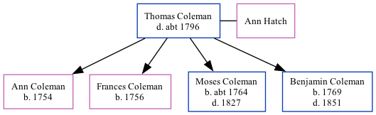

Thomas Coleman, the 5 times great-grandfather of Nigel Horne, was born in Brabourne, Kent, England and married Ann Hatch (with whom he had 4 children: Ann, Frances, Moses and Benjamin) in Brabourne on Apr 14, 17512.
He died c. 1796 in Brabourne1 and was buried there on Nov 17, 17961.
England, Select Deaths and Burials, 1538-1991 Ancestry.com Operations, Inc.
Public Member Trees Online publication - Provo, UT, USA: The Generations Network, Inc., 2006.Original data - Family trees submitted by Ancestry members.Original data: Family trees submitted by Ancestry members.
Family Tree

Interactive Map
Map
Generated by ged2site. Last updated on Feb 18, 2025